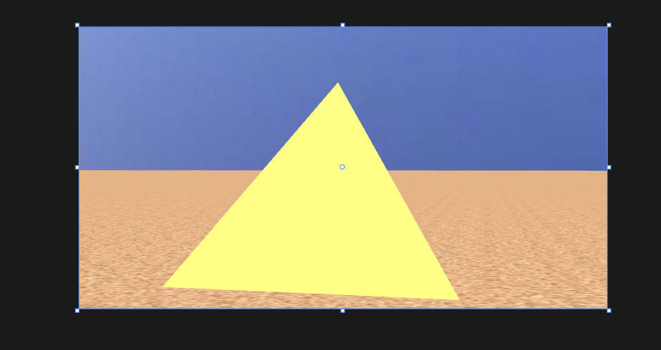

6.固定功能的3D图形平台和层次建模简介
6.4 WPF中的表面纹理
在WPF当中通过DiffuseMaterial指定材质,通过MeshGeometry3D指定几何数据,通过GeometryModel3D实例化材质和几何体创建元素对象,最后就可以使用了

助记小故事--金字塔
继小熊创建了发光小球之后,发现了一台控制终端,输入DiffuseMaterial命令创建了一个材质,MeshGeometry3D指定了一个几何体金字塔,最后用GeometryModel3D实例化了一个小金字塔